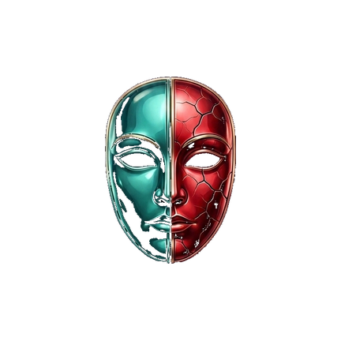
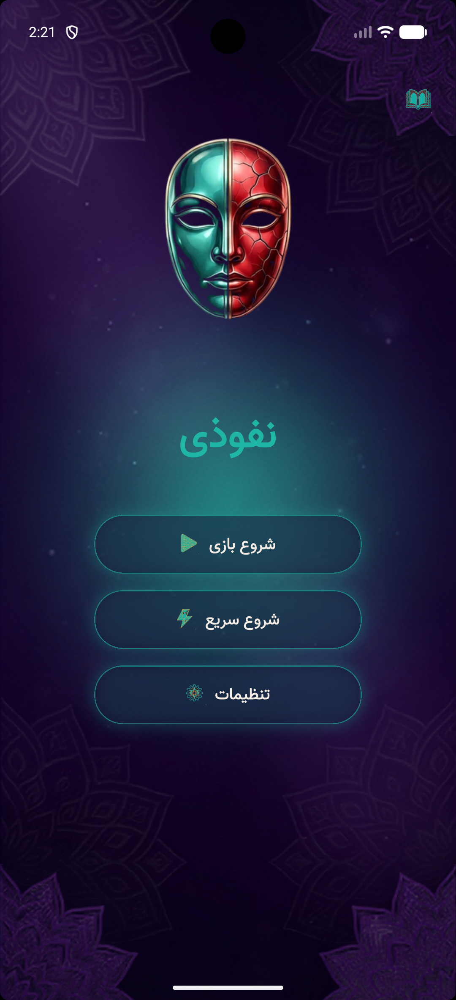
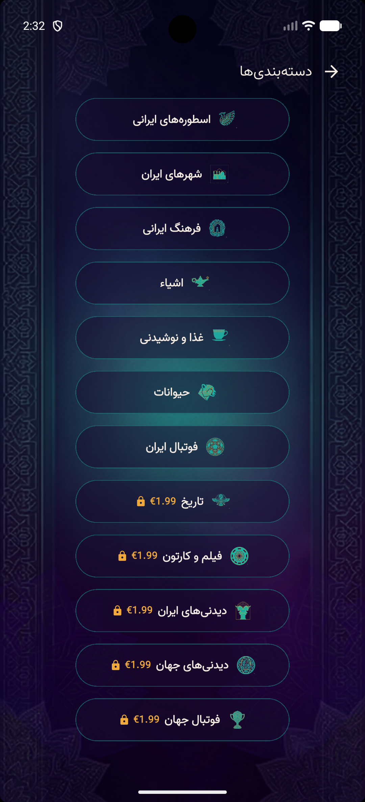
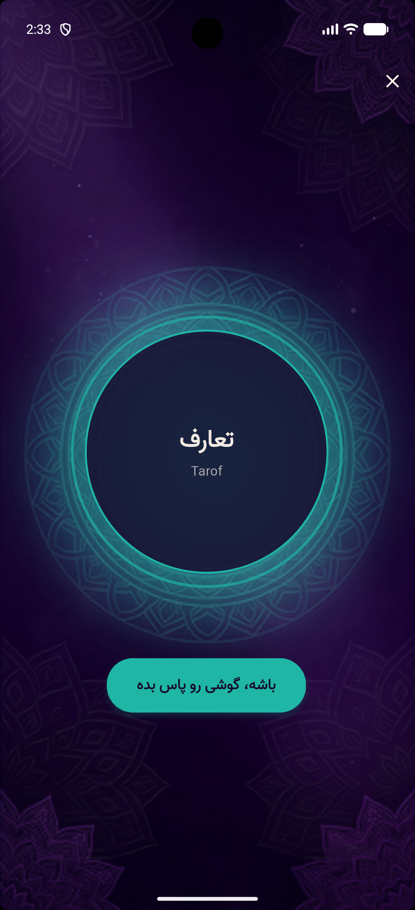
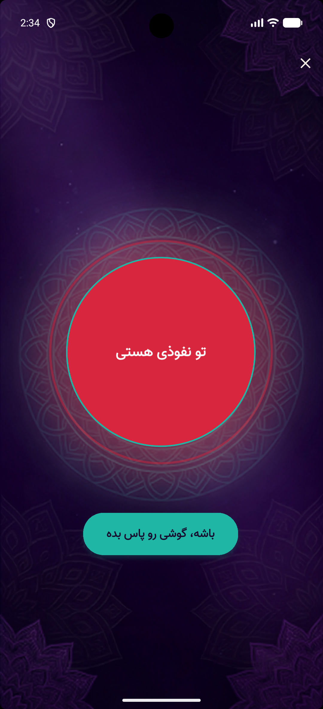
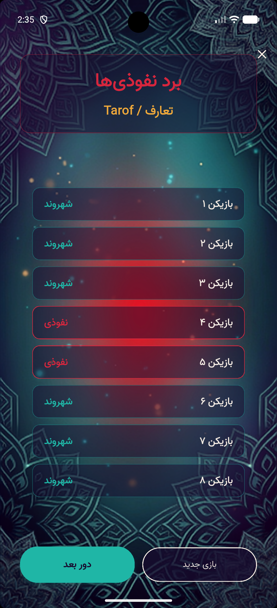
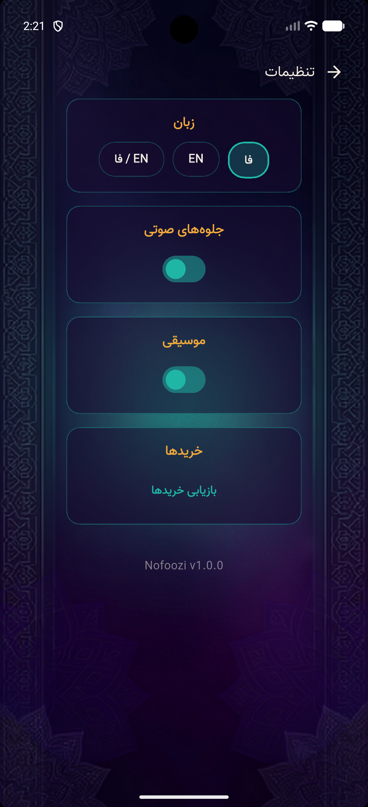

نفوذی · NofooziThe party game where nobody gets left out because of language.
A pass-and-play social deduction game for the Iranian diaspora. Gather 3 to 16 players around one phone — every card, clue, and reveal shows Farsi and English together, always.
No downloads for guests. Gather 3 to 16 players in one room and pass around a single device.
One player is the Imposter and doesn't know the secret word. Everyone else must find the Imposter — while the Imposter tries to stay hidden.
Take turns describing the word without saying it. Farsi, English, or a mix of both — every screen keeps up either way.
When time's up, vote out your suspect. The reveal screen shows the word and the Imposter in both languages at once.
Not a toggle buried in settings. Every card, timer, and vote screen renders Farsi and English side by side by default — so a grandparent who reads only Farsi and a cousin who reads only English play the exact same game, at the same table.
کلمه رمز را حدس بزن، قبل از اینکه لو بروی
Guess the secret word before they catch you.





